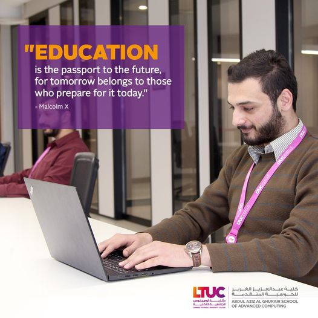

كلية عبدالعزيز الغرير للحوسبة المتقدمة (ASAC)

Education is a human right, a public good and a public responsibility.
The United Nations General Assembly proclaimed 24 January as International Day of Education, in celebration of the role of education for peace and development.
Without inclusive and equitable quality education and lifelong opportunities for all, countries will not succeed in achieving gender equality and breaking the cycle of poverty that is leaving millions of children, youth and adults behind.
Today, 258 million children and youth still do not attend school; 617 million children and adolescents cannot read and do basic math; less than 40% of girls in sub-Saharan Africa complete lower secondary school and some four million children and youth refugees are out of school. Their right to education is being violated and it is unacceptable.